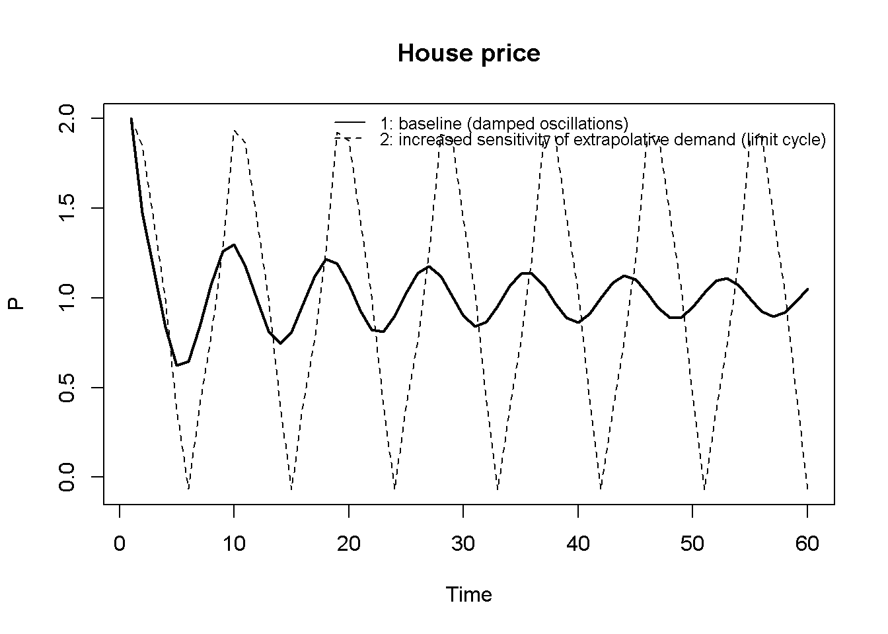
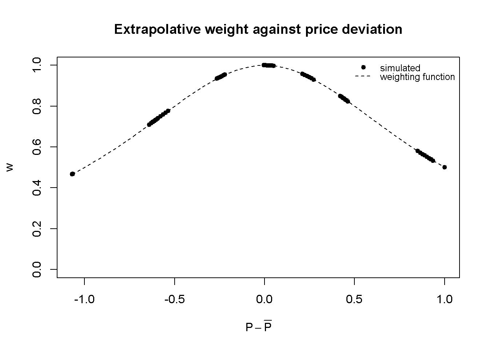
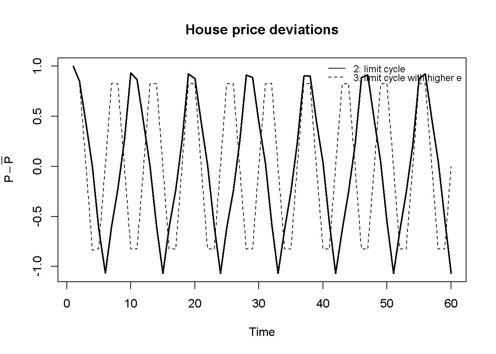
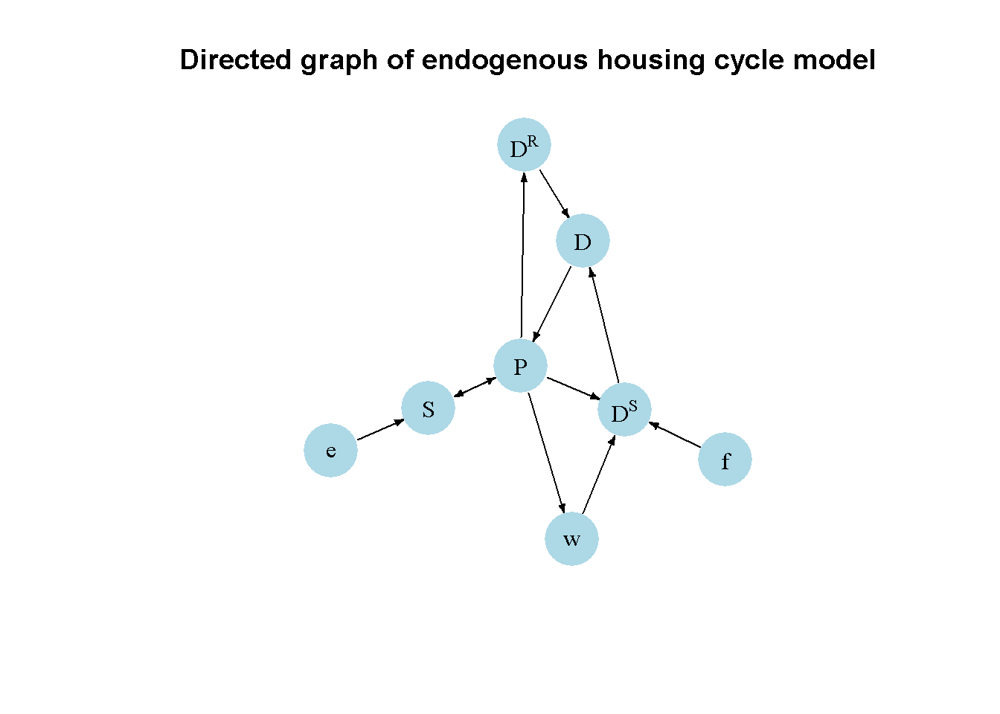

# Clear the environment
rm(list=ls(all=TRUE))
# Set number of periods
Q=300
# Set number of scenarios
S_scen=3
# Create (S_scen x Q)-matrices that will contain the simulated data
S=matrix(data=0, nrow=S_scen, ncol=Q) # Housing stock
P=matrix(data=0, nrow=S_scen, ncol=Q) # House price
D=matrix(data=0, nrow=S_scen, ncol=Q) # Total demand
DR=matrix(data=0, nrow=S_scen, ncol=Q) # Real demand
DS=matrix(data=0, nrow=S_scen, ncol=Q) # Speculative demand
DE=matrix(data=0, nrow=S_scen, ncol=Q) # Extrapolative demand
DMR=matrix(data=0, nrow=S_scen, ncol=Q) # Regressive demand
w=matrix(data=0, nrow=S_scen, ncol=Q) # Weight of extrapolative demand
# Set fixed parameter values
a=1 # Speed of price adjustment
c=0.05 # Sensitivity of real demand to price
d=0.98 # Persistence of housing stock
g=1 # Sensitivity of regressive demand to price gap
h=1 # Sensitivity of the extrapolative weight to price gap
# Calculate the value of b consistent with a fundamental price of Pbar=1
# (given the baseline price sensitivity of supply e=0.5)
b=1*(c + 0.5/(1-d))
# Set parameter values for different scenarios
f=matrix(data=0.05, nrow=S_scen, ncol=Q) # scenario 1: baseline
f[2:3,]=0.8 # scenarios 2-3: increase in sensitivity of extrapolative demand to price deviations
e=c(0.5, 0.5, 1.0) # scenario 3: higher price sensitivity of supply
# Calculate the fundamental price and steady-state housing stock implied by e and b
Pbar=(1-d)*b/(e + c*(1-d))
Sstar=e*Pbar/(1-d)
# Initialise: housing stock at its fundamental level, price perturbed away from it
S[,1]=Sstar
P[,1]=Pbar + 1
DR[,1]=b - c*P[,1]
DE[,1]=f[,1]*(P[,1] - Pbar)
DMR[,1]=g*(Pbar - P[,1])
w[,1]=1/(1+h*(P[,1]-Pbar)^2)
DS[,1]=w[,1]*DE[,1] + (1-w[,1])*DMR[,1]
D[,1]=DR[,1] + DS[,1]
# Simulate the model by looping over Q time periods for S_scen different scenarios
for (i in 1:S_scen){
for (t in 2:Q){
#(1) House price
P[i,t] = P[i,t-1] + a*(D[i,t-1] - S[i,t-1])
#(2) Housing stock
S[i,t] = d*S[i,t-1] + e[i]*P[i,t]
#(3) Real demand
DR[i,t] = b - c*P[i,t]
#(4) Extrapolative speculative demand
DE[i,t] = f[i,t]*(P[i,t] - Pbar[i])
#(5) Regressive speculative demand
DMR[i,t] = g*(Pbar[i] - P[i,t])
#(6) Weight of extrapolative demand
w[i,t] = 1/(1+h*(P[i,t]-Pbar[i])^2)
#(7) Total speculative demand
DS[i,t] = w[i,t]*DE[i,t] + (1-w[i,t])*DMR[i,t]
#(8) Total demand
D[i,t] = DR[i,t] + DS[i,t]
} # close time loop
} # close scenario loop18 An Endogenous Housing Cycle Model
Overview
This section presents a model of speculative behaviour in housing markets due to Dieci and Westerhoff (2012). The model generates endogenous boom-bust cycles in house prices that are driven by the interaction of heterogeneous speculators and housing supply. The model thus belongs to the family of endogenous cycle models in the tradition of Kaldor (1940) (see Chapter 16) and Hicks (1950) (see Chapter 17).
House prices are assumed to adjust to excess demand for housing. The demand for housing is split into a ‘real’ component and a ‘speculative’ component. The real demand for housing follows conventional economic behaviour: it declines as house prices rise. By contrast, the speculative component is driven by expectations about future capital gains via increases in house prices. Speculators are boundedly rational and can switch between two simple heuristics to form expectations: an extrapolative rule, that predicts prices to keep moving in the direction of their most recent deviation from the fundamental value, and a regressive rule that predicts prices to revert back towards their fundamental values. The more house prices deviate from their fundamental values, the more agents use the regressive forecasting rule.
Housing supply is assumed to respond positively to house prices. A typical housing cycle thus plays out as follows. As prices are relatively close to their fundamental values, small deviations from the fundamental value induce extrapolative behaviour, i.e. speculators begin to buy houses as they expect prices to rise further. The increase in demand for houses drives up prices, making expectations self-fulfilling. At the same time, construction picks up, leading to a housing boom that eases the pressure on house prices. Over time, more and more agents begin to believe that a mean reversion will occur. Eventually, demand will begin to decline, driving down house prices.
The Model
The following equations describe the model:
\[ S_t = dS_{t-1} + eP_t, \quad d \in (0,1), \; e>0 \tag{18.1}\]
\[ P_t = P_{t-1} + a(D_{t-1} - S_{t-1}), \quad a>0 \tag{18.2}\]
\[ D_t = D_t^R + D_t^S \tag{18.3}\]
\[ D_t^R = b - cP_t, \quad c>0 \tag{18.4}\]
\[ D_t^S = w_tD_t^E + (1-w_t)D_t^{MR} \tag{18.5}\]
\[ D_t^E = f(P_t - \bar{P}), \quad f>0 \tag{18.6}\]
\[ D_t^{MR} = g(\bar{P} - P_t), \quad g>0 \tag{18.7}\]
\[ w_t = \frac{1}{1+h(P_t - \bar{P})^2}, \quad h>0 \tag{18.8}\]
where \(S_t\), \(P_t\), \(D_t\), \(D_t^R\), \(D_t^S\), \(D_t^E\), and \(D_t^{MR}\) represent the housing stock, the house price, total demand for housing, real demand, total speculative demand, extrapolative speculative demand, and regressive (‘mean-reverting’) speculative demand, respectively. \(\bar{P}\) is the (exogenously given) fundamental house price.
Equation 18.1 describes the evolution of the housing stock: a fraction \(d\) of the existing stock persists into the next period, and new construction is added, which is assumed to respond to the current house price (with the price sensitivity of housing supply given by \(e\)). Equation 18.2 states that the house price adjusts to excess demand for housing in the previous period, with \(a\) governing the speed of price adjustment. Equation 18.3 decomposes total demand for housing into a real and a speculative component. By Equation 18.4, real demand is a decreasing function of the price, capturing the idea that housing becomes less affordable as the price rises. Equation 18.5 states that speculative demand is a weighted average of an extrapolative and a regressive demand component, with the weight \(w_t\) governing the relative importance of the two. By Equation 18.6, extrapolative demand is positively related to the deviation of the price from its fundamental value \(\bar{P}\): speculators following this rule buy more housing when the price is above (and thus, in their expectation, still rising above) its fundamental value. By Equation 18.7, regressive demand does the opposite: it is positively related to the gap between the fundamental value and the current price, capturing the expectation that the price will revert towards \(\bar{P}\). Finally, Equation 18.8 specifies the weight of extrapolative demand as a bell-shaped function of the squared deviation of the price from its fundamental value: the weight is maximal (\(w_t=1\)) when the price equals its fundamental value, and declines towards zero as the price moves further away from \(\bar{P}\) in either direction. This is what eventually curbs the destabilising extrapolative dynamics, as more and more agents switch to the regressive rule when the deviation of the price from its fundamental value becomes large.
Simulation
Parameterisation
Table 1 reports the parameterisation used in the simulation. Starting from a baseline (scenario 1), we will examine the effect of an increase in the sensitivity of extrapolative demand to price deviations, \(f\) (scenario 2). Scenario 3 keeps the elevated sensitivity of extrapolative demand to price deviations and additionally raises the price sensitivity of housing supply \(e\). Using the steady state solutions for \(\bar{P}\) and \(S^*\) (which will be derived in the analytical discussion section below), we set \(b\) so as to have a fundamental house price of \(\bar{P}=1\) in scenarios 1 and 2, and we initialise the simulation in the steady state with only the house price being slightly perturbed.
Table 1: Parameterisation
| Scenario | \(a\) | \(c\) | \(d\) | \(e\) | \(f\) | \(g\) | \(h\) | \(b\) | \(\bar{P}\) (implied) |
|---|---|---|---|---|---|---|---|---|---|
| 1: baseline | 1 | 0.05 | 0.98 | 0.5 | 0.05 | 1 | 1 | 25.05 | 1 |
| 2: increase in sensitivity of extrapolative demand \(f\) | 1 | 0.05 | 0.98 | 0.5 | 0.8 | 1 | 1 | 25.05 | 1 |
| 3: increase in price sensitivity of supply \(e\) | 1 | 0.05 | 0.98 | 1.0 | 0.8 | 1 | 1 | 25.05 | 0.500 |
Simulation code
NotePython code
import numpy as np
# Set number of periods
Q = 300
# Set number of scenarios
S_scen = 3
# Create (S_scen x Q)-matrices that will contain the simulated data
S = np.zeros((S_scen, Q)) # Housing stock
P = np.zeros((S_scen, Q)) # House price
D = np.zeros((S_scen, Q)) # Total demand
DR = np.zeros((S_scen, Q)) # Real demand
DS = np.zeros((S_scen, Q)) # Speculative demand
DE = np.zeros((S_scen, Q)) # Extrapolative demand
DMR = np.zeros((S_scen, Q)) # Regressive demand
w = np.zeros((S_scen, Q)) # Weight of extrapolative demand
# Set fixed parameter values
a = 1 # Speed of price adjustment
c = 0.05 # Sensitivity of real demand to price
d = 0.98 # Persistence of housing stock
g = 1 # Sensitivity of regressive demand to price gap
h = 1 # Sensitivity of the extrapolative weight to price gap
# Calculate the value of b consistent with a fundamental price of Pbar=1
# (given the baseline price sensitivity of supply e=0.5); b is held fixed across scenarios
b = 1 * (c + 0.5 / (1 - d))
# Set parameter values for different scenarios (e is exogenous; Pbar is implied)
e = np.array([0.5, 0.5, 1.0]) # scenario 3: higher price sensitivity of supply
f = np.full((S_scen, Q), 0.05) # scenario 1: damped oscillations
f[1:3, :] = 0.8 # scenarios 2-3: limit cycle
# Calculate the fundamental price and steady-state housing stock implied by e and b
Pbar = (1 - d) * b / (e + c * (1 - d))
Sstar = e * Pbar / (1 - d)
# Initialise: housing stock at its fundamental level, price perturbed away from it
S[:, 0] = Sstar
P[:, 0] = Pbar + 1
DR[:, 0] = b - c * P[:, 0]
DE[:, 0] = f[:, 0] * (P[:, 0] - Pbar)
DMR[:, 0] = g * (Pbar - P[:, 0])
w[:, 0] = 1 / (1 + h * (P[:, 0] - Pbar)**2)
DS[:, 0] = w[:, 0] * DE[:, 0] + (1 - w[:, 0]) * DMR[:, 0]
D[:, 0] = DR[:, 0] + DS[:, 0]
# Simulate the model by looping over Q time periods for S_scen different scenarios
for i in range(S_scen):
for t in range(1, Q):
# (1) House price
P[i, t] = P[i, t-1] + a * (D[i, t-1] - S[i, t-1])
# (2) Housing stock
S[i, t] = d * S[i, t-1] + e[i] * P[i, t]
# (3) Real demand
DR[i, t] = b - c * P[i, t]
# (4) Extrapolative speculative demand
DE[i, t] = f[i, t] * (P[i, t] - Pbar[i])
# (5) Regressive speculative demand
DMR[i, t] = g * (Pbar[i] - P[i, t])
# (6) Weight of extrapolative demand
w[i, t] = 1 / (1 + h * (P[i, t] - Pbar[i])**2)
# (7) Total speculative demand
DS[i, t] = w[i, t] * DE[i, t] + (1 - w[i, t]) * DMR[i, t]
# (8) Total demand
D[i, t] = DR[i, t] + DS[i, t]Plots
Figure 18.1 compares the house price dynamics of scenarios 1 and 2. For a relatively low price sensitivity of extrapolative demand (\(f=0.05\)), the price converges back to its fundamental value in damped oscillations. For a high sensitivity (\(f=0.8\)), the equilibrium becomes locally unstable and the price instead settles into a permanent limit cycle.
# Set start and end periods for plots (a short window so the cycles are easy to read)
Tmin=1
Tmax=60
# Plot house price for scenarios 1 and 2
plot(P[1, Tmin:Tmax], type="l", col=1, lwd=2, lty=1, xlab="Time", ylab="P",
ylim=range(P[1, Tmin:Tmax], P[2, Tmin:Tmax]))
title(main="House price", cex=0.8)
lines(P[2, Tmin:Tmax], lty=2)
legend("topright", legend=c("1: baseline (damped oscillations)", "2: increased sensitivity of extrapolative demand (limit cycle)"),
lty=1:2, cex=0.8, bty = "n", y.intersp=0.8)
NotePython code
import matplotlib.pyplot as plt
# Set start and end periods for plots (a short window so the cycles are easy to read)
Tmin = 0
Tmax = 60
# Plot house price for scenarios 1 and 2
plt.figure()
plt.plot(range(Tmin, Tmax), P[0, Tmin:Tmax], color='black', linewidth=2, linestyle='-', label='1: baseline (damped oscillations)')
plt.plot(range(Tmin, Tmax), P[1, Tmin:Tmax], color='black', linewidth=2, linestyle='--', label='2: increased sensitivity of extrapolative demand (limit cycle)')
plt.title('House price', fontsize=10)
plt.xlabel('Time')
plt.ylabel('P')
plt.legend(loc='upper right', frameon=False)
plt.show()Figure 18.2 illustrates the switching mechanism that drives the limit cycle in scenario 2. It plots the simulated weight of extrapolative demand, \(w_t\), against the price deviation from its fundamental value, \(P_t-\bar P\), together with the bell-shaped weighting function from Equation 18.8. The simulated points all lie on this curve, and the cycle moves back and forth along it: near the top of the curve, extrapolative demand dominates and pushes the price away from its fundamental value, while further out, the weight of regressive demand rises (to around one half in this simulation), which is sufficient to pull the price back. Since the curve is symmetric, the weight falls in the same way during booms (\(P_t>\bar P\)) and busts (\(P_t<\bar P\)).
# Plot the weight of extrapolative demand against the price deviation for the limit-cycle scenario
plot(P[2, Tmin:Tmax] - Pbar[2], w[2, Tmin:Tmax], pch=19, cex=0.8, col=1, xlab=expression(P-bar(P)), ylab="w",
ylim=range(0,1))
title(main="Extrapolative weight against price deviation", cex=0.8)
# Add the weighting function
curve(1/(1+h*x^2), add=TRUE, lty=2)
legend("topright", legend=c("simulated", "weighting function"),
lty=c(NA,2), pch=c(19,NA), cex=0.8, bty = "n", y.intersp=0.8)
NotePython code
# Plot the weight of extrapolative demand against the price deviation for the limit-cycle scenario
plt.figure()
plt.scatter(P[1, Tmin:Tmax] - Pbar[1], w[1, Tmin:Tmax], color='black', s=15, label='simulated')
# Add the weighting function
x = np.linspace(min(P[1, Tmin:Tmax] - Pbar[1]), max(P[1, Tmin:Tmax] - Pbar[1]), 200)
plt.plot(x, 1/(1+h*x**2), color='black', linestyle='--', label='weighting function')
plt.title('Extrapolative weight against price deviation', fontsize=10)
plt.xlabel(r'$P-\bar{P}$')
plt.ylabel('w')
plt.ylim(0, 1)
plt.legend(loc='upper right', frameon=False)
plt.show()Next, we compare scenarios 2 and 3 to see how an increase in the price sensitivity of housing supply \(e\) affects the amplitude of the cycles. Since scenario 3 implies a different fundamental price \(\bar P\) than scenario 2, we compare their cycles in deviations from the fundamental value, \(P_t-\bar P\). Figure 18.3 shows that raising the price sensitivity of housing supply shortens the cycle and noticeably shrinks its amplitude, since a more responsive supply side allows the housing stock to absorb price pressure more quickly.
# Plot house price deviations from the fundamental value for scenarios 2 and 3
plot(P[2, Tmin:Tmax] - Pbar[2], type="l", col=1, lwd=2, lty=1, xlab="Time", ylab=expression(P-bar(P)),
ylim=range(P[2, Tmin:Tmax] - Pbar[2], P[3, Tmin:Tmax] - Pbar[3]))
title(main="House price deviations", cex=0.8)
lines(P[3, Tmin:Tmax] - Pbar[3], lty=2)
legend("topright", legend=c("2: limit cycle", "3: limit cycle with higher e"),
lty=1:2, cex=0.8, bty = "n", y.intersp=0.8)
NotePython code
# Plot house price deviations from the fundamental value for scenarios 2 and 3
plt.figure()
plt.plot(range(Tmin, Tmax), P[1, Tmin:Tmax] - Pbar[1], color='black', linewidth=2, linestyle='-', label='2: limit cycle')
plt.plot(range(Tmin, Tmax), P[2, Tmin:Tmax] - Pbar[2], color='black', linewidth=2, linestyle='--', label='3: limit cycle with higher e')
plt.title('House price deviations', fontsize=10)
plt.xlabel('Time')
plt.ylabel(r'$P-\bar{P}$')
plt.legend(loc='upper right', frameon=False)
plt.show()Directed graph
Another perspective on the model’s properties is provided by its directed graph. A directed graph consists of a set of nodes that represent the variables of the model. Nodes are connected by directed edges. An edge directed from a node \(x_1\) to node \(x_2\) indicates a causal impact of \(x_1\) on \(x_2\).
## Create directed graph
# Construct auxiliary Jacobian matrix for 8 variables:
# endogenous: (1) S, (2) P, (3) D, (4) DR, (5) DS, (6) w
# exogenous: (7) e, (8) f
#S P D DR DS w e f
M_mat=matrix(c(0,1,0, 0, 0, 0, 1, 0, # S
1,0,1, 0, 0, 0, 0, 0, # P
0,0,0, 1, 1, 0, 0, 0, # D
0,1,0, 0, 0, 0, 0, 0, # DR
0,1,0, 0, 0, 1, 0, 1, # DS
0,1,0, 0, 0, 0, 0, 0, # w
0,0,0, 0, 0, 0, 0, 0, # e
0,0,0, 0, 0, 0, 0, 0),# f
8, 8, byrow=TRUE)
# Create adjacency matrix from transpose of auxiliary Jacobian
A_mat=t(M_mat)
# Create directed graph from adjacency matrix
library(igraph)
dg=graph_from_adjacency_matrix(A_mat, mode="directed", weighted= NULL)
# Define node labels
V(dg)$name=c("S", "P", "D", expression(D^R), expression(D^S), "w", "e", "f")
# Plot directed graph
plot(dg, main="Directed graph of endogenous housing cycle model", vertex.size=28, vertex.color="lightblue",
vertex.label.color="black", edge.arrow.size=0.3, edge.width=1.1, edge.size=1.2,
edge.arrow.width=1.2, edge.color="black", vertex.label.cex=1,
vertex.frame.color="NA", margin=-0.08)
NotePython code
import networkx as nx
# Construct auxiliary Jacobian matrix for 8 variables:
# Endogenous: (1) S, (2) P, (3) D, (4) DR, (5) DS, (6) w
# Exogenous: (7) e, (8) f
M_mat = np.array([[0, 1, 0, 0, 0, 0, 1, 0], # S
[1, 0, 1, 0, 0, 0, 0, 0], # P
[0, 0, 0, 1, 1, 0, 0, 0], # D
[0, 1, 0, 0, 0, 0, 0, 0], # DR
[0, 1, 0, 0, 0, 1, 0, 1], # DS
[0, 1, 0, 0, 0, 0, 0, 0], # w
[0, 0, 0, 0, 0, 0, 0, 0], # e
[0, 0, 0, 0, 0, 0, 0, 0]]) # f
# Create adjacency matrix from transpose of auxiliary Jacobian
A_mat = M_mat.T
# Create the graph from the adjacency matrix
G = nx.DiGraph(A_mat)
# Define node labels
nodelabs = {0: "S", 1: "P", 2: "D", 3: r"$D^R$", 4: r"$D^S$", 5: "w",
6: "e", 7: "f"}
# Plot the graph
pos = nx.spring_layout(G, seed=42)
nx.draw_networkx(G, pos, node_size=400, node_color="lightblue",
edge_color="black", width=1.2, arrowsize=10,
arrowstyle='->', font_size=9, font_color="black",
with_labels=True, labels=nodelabs)
plt.axis("off")
plt.title("Directed graph of endogenous housing cycle model")
plt.show()Figure 18.4 shows that the house price \(P\) occupies a central position in the model: it is affected by demand and the housing stock, and it, in turn, affects speculative and real demand, the extrapolative weight, and the housing stock itself. The housing stock \(S\), price \(P\), and total demand \(D\) form the core feedback loop of the model. The price sensitivity of housing supply \(e\) feeds in directly via the housing stock, while \(f\) feeds in via speculative demand \(D^S\), which – together with the extrapolative weight \(w\) – determines how strongly and in which direction \(P\) feeds back on itself.
Analytical discussion
To analyse the dynamic properties of the model, it is helpful to reduce it to a two-dimensional system. First, combine Equation 18.3 with Equation 18.4, Equation 18.5, Equation 18.6 and Equation 18.7 into a single demand function:
\[ D_t = b - cP_t + w_t f (P_t-\bar{P}) + (1-w_t)g(\bar{P}-P_t) \tag{18.9}\]
Next, define the auxiliary variable \(Z_t=S_{t-1}\) and shift Equation 18.1 back by one period, giving \(Z_t = dZ_{t-1} + eP_{t-1}\). Substituting Equation 18.9 (lagged) and \(S_{t-1}=Z_t\) into Equation 18.2 and using \(Z_t = dZ_{t-1} + eP_{t-1}\) to eliminate \(Z_t\) yields the following two-dimensional system in \(Z_t\) and \(P_t\):
\[ Z_t = dZ_{t-1} + eP_{t-1} \tag{18.10}\]
\[ P_t = ab - adZ_{t-1} + (1-ac-ae)P_{t-1} + a\left[w_{t-1} f(P_{t-1}-\bar{P}) + (1-w_{t-1})g(\bar{P}-P_{t-1})\right]. \tag{18.11}\]
The model has a ‘fundamental’ steady state at \(P^*=\bar{P}\), at which extrapolative and regressive demand are both equal to zero (\(D^{E*}=D^{MR*}=0\)), so that \(D^*=D^{R*}\). Setting \(Z_t=Z_{t-1}=Z^*\) and \(P_t=P_{t-1}=P^*=\bar{P}\) in Equation 18.10 and Equation 18.11 and solving for \(Z^*\) and \(\bar P\) yields:
\[ Z^*=\frac{e}{1-d}\bar{P}, \qquad \bar{P}=\frac{(1-d)b}{e+c(1-d)}. \tag{18.12}\]
Next, define deviations from the steady state \(z_t=Z_t-Z^*\) and \(p_t=P_t-P^*\). Since, by Equation 18.8, \(w_t\) is a function of \((P_t-\bar P)^2=p_t^2\), expressing the term in square brackets in Equation 18.11 in terms of deviations simplifies it to \(\frac{fp_{t-1}-ghp_{t-1}^3}{1+hp_{t-1}^2}\), so that the system becomes:
\[ z_t = dz_{t-1} + ep_{t-1} \tag{18.13}\]
\[ p_t = -adz_{t-1} + (1-ac-ae)p_{t-1} + a\frac{fp_{t-1}-ghp_{t-1}^3}{1+hp_{t-1}^2}. \tag{18.14}\]
The Jacobian matrix of the nonlinear system given by Equation 18.13 and Equation 18.14 is:
\[ J(z, p)=\begin{bmatrix} d & e \\[4pt] -ad & 1-a(c+e) + a\dfrac{f-h(f+3g)p^2-gh^2p^4}{(1+hp^2)^2} \end{bmatrix}. \tag{18.15}\]
Linearising Equation 18.14 around \(p^*=z^*=0\) gives the Jacobian matrix of the linearised system at the fundamental steady state:
\[ J(z^*,p^*)=\begin{bmatrix} d & e \\ -ad & 1-a(c+e-f) \end{bmatrix}. \tag{18.16}\]
The determinant and trace of Equation 18.16 are:
\[ det(J)=d[1-a(c-f)], \qquad tr(J)=d + 1-a(c+e-f). \]
The eigenvalues of Equation 18.16 will be a pair of complex conjugates, giving rise to cyclical dynamics, if the discriminant of its characteristic polynomial is negative, i.e. if:
\[ \Delta=\left[d+1-a(c+e-f)\right]^2-4d\left[1-a(c-f)\right]<0. \tag{18.17}\]
At \(a=1\) and if \(1-c+f>0\), we can write this as:
\[ \frac{(c+e-f-1-d)^2}{4(1-c+f)}<d. \]
Next, using the stability conditions for two-dimensional discrete-time systems (see Chapter 9), the fundamental steady state is locally asymptotically stable if the following three conditions jointly hold:
\[ 1+tr(J)+det(J)>0 \; \Leftrightarrow \; f>c+\frac{e}{1+d}-\frac{2}{a}, \tag{18.18}\]
\[ 1-tr(J)+det(J)>0 \; \Leftrightarrow \; f<c+\frac{e}{1-d}, \tag{18.19}\]
\[ 1-det(J)>0 \; \Leftrightarrow \; f<c+\frac{1}{ad}-\frac{1}{a}. \tag{18.20}\]
Dieci and Westerhoff (2012) show that violating each of the three conditions individually – while the other two continue to hold – corresponds to a different type of bifurcation: violating Equation 18.18 triggers a (subcritical) flip bifurcation, violating Equation 18.19 triggers a (supercritical) pitchfork bifurcation giving rise to two new, stable non-fundamental steady states, and violating Equation 18.20 triggers a (supercritical) Neimark-Sacker bifurcation, after which the fundamental steady state turns into a limit cycle; the amplitude of the fluctuations increases with \(f\), and for larger values of \(f\), periodic windows and apparently chaotic dynamics emerge.
For our parameterisation, Equation 18.18 and Equation 18.19 are satisfied, while Equation 18.20 is violated once \(f\) exceeds \(c+\frac{1}{d}-1\approx0.070\) (at \(a=1\)), thus giving rise to a limit cycle via a Neimark-Sacker bifurcation. Since the nonlinearity in Equation 18.14 bounds the dynamics for large deviations (as \(w_t \rightarrow 0\), extrapolative demand is crowded out by regressive demand), the system does not explode once this threshold is crossed, but instead settles into a limit cycle – exactly the pattern seen in Figure 18.1.
We can verify this numerically for the parameterisation used in the simulation above.
[1] 1.115+0.6868588i 1.115-0.6868588i[1] 1.30958# Check whether eigenvalues are complex (cycle condition)
Delta=(d + 1 - a*(c+e-f_val))^2 - 4*d*(1 - a*(c-f_val))
Delta < 0[1] TRUE# Check general stability conditions
print(1+tr+det>0)[1] TRUEprint(1-tr+det>0)[1] TRUEprint(1-det>0)[1] FALSE# Check analytical stability condition
f_val < c + 1/(a*d) - 1/a[1] FALSESince the discriminant is negative and the modulus of the (complex) dominant eigenvalue exceeds one, the fundamental steady state is indeed an unstable focus for this parameterisation, consistent with the limit cycle observed in the simulation.
We can compute the cycle length as follows:
[1] 11.38024
NotePython code
### Stability analysis
# Set parameter values (limit-cycle scenario)
a = 1
c = 0.05
d = 0.98
e = 0.5
f_val = 0.8
# Construct Jacobian matrix evaluated at the fundamental steady state
J = np.array([[d, e],
[-a*d, 1-a*(c+e-f_val)]])
# Obtain eigenvalues
evals, _ = np.linalg.eig(J)
print(evals)
# Obtain determinant and trace
tr = np.trace(J)
det = np.linalg.det(J)
print(det)
# Calculate modulus
mod = abs(evals[0])
print(mod)
# Check whether eigenvalues are complex (cycle condition)
Delta = (d + 1 - a*(c+e-f_val))**2 - 4*d*(1 - a*(c-f_val))
print(Delta < 0)
# Check general stability conditions
print(1 + tr + det > 0)
print(1 - tr + det > 0)
print(1 - det > 0)
# Check analytical stability condition
print(f_val < c + 1/(a*d) - 1/a)
### Calculate cycle length
# Save real and imaginary part of complex eigenvalue
re = np.real(evals[0])
im = np.imag(evals[0])
# Calculate cycle length
L = (2 * np.pi) / np.arccos(re / mod)
print(L)The cycle length implied by the linearised system is around 11.4 periods. This is only a rough guide to the periodicity of the limit cycle in Figure 18.1, which repeats roughly every 9 periods. The difference arises because the linearisation only captures the dynamics in the immediate neighbourhood of the fundamental steady state.
References
Dieci, Roberto, and Frank Westerhoff. 2012. “A Simple Model of a Speculative Housing Market.” Journal of Evolutionary Economics 22 (4): 897–921. https://doi.org/10.1007/s00191-011-0259-8.
Hicks, John R. 1950. A Contribution to the Theory of the Trade Cycle. Clarendon Press.
Kaldor, Nicholas. 1940. “A Model of the Trade Cycle.” The Economic Journal 50 (197): 78–92.